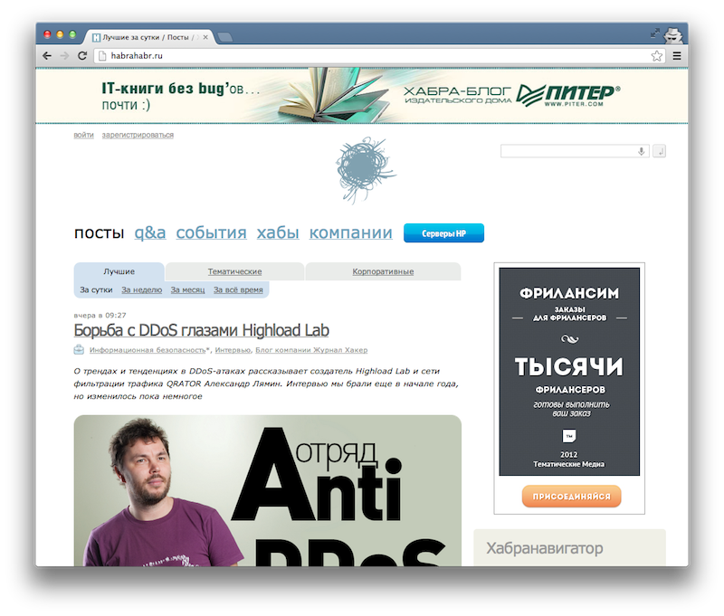

CSS для удобного просмотра Хабра
Первый опыт “причесывания” сайтов, пестрящих баннерами, был очень удачным. Я постоянно лазаю на translate.ru, поэтому сделать его компактным было полезно.
Теперь небольшой fix для Хабра. Было:

Стало (просмотр в полную ширину и без рекламы):

Фикс можно приложить расширением Stylebot.
#topline { display: none; } #header .logo { background: none; height: 30px; } #header .main_menu .banner_special { display: none; } .sidebar_right { display: none; } .content_left { width: 99%; } .rotated_posts { display: none; }
Disclaimer